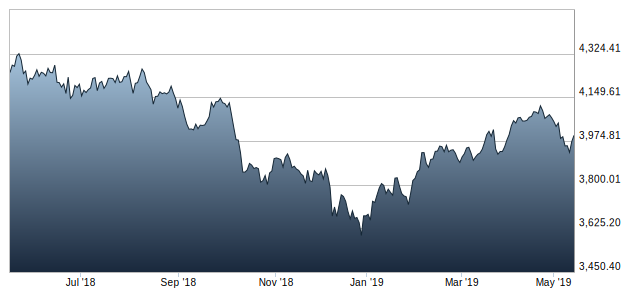

On the left is an example of an SVG image. Graphs like this are best served as SVG or PNG images, since JPG is a lossy compression format that handles hard edges particularly poorly.
Below is an example of a JPG image, which is a particularly good format for photographs. This photo is also a link, if you click on it, you will be taken to the page about links.